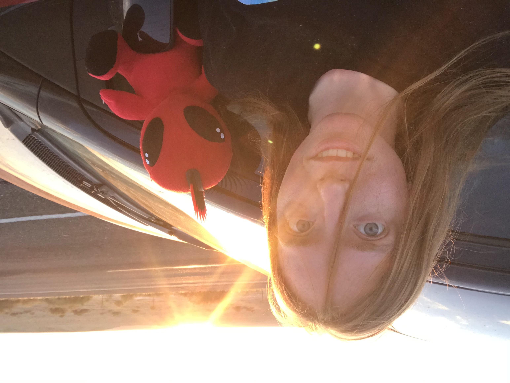

Gamer. Pun Enthusiast. Epicodus Student.
A website all about me and my learning experience so far at Epicodus.
Below are a few projects I've worked on so far and the languages I used to help create them:
I am currently a student at Epicodus where I'm learning how to become a super awesome programmer. I attended Norwich University and have a bachelor's degree in Psychology. Before applying to Epicodus, I was previously a law enforcement officer. I started teaching myself to code about a year ago and decided to switch careers to learn a new set of skills and help make a positive impact through computer programming.
I really enjoy gaming and watching movies. Right now, the games I've been playing the most are Horizon Zero Dawn for the PS4 and Astroneer on Steam. I also love traveling/exploring new places, hiking, puns (they are intended) and coffee shops. I probably won't be doing any of these things nearly as much while I'm attending Epicodus, but lucky for me, I really like coding, too!